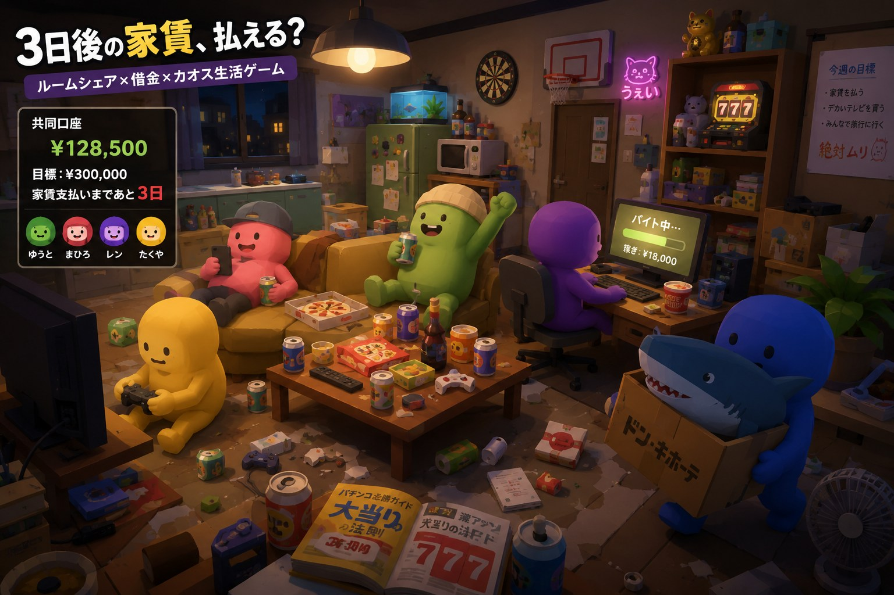
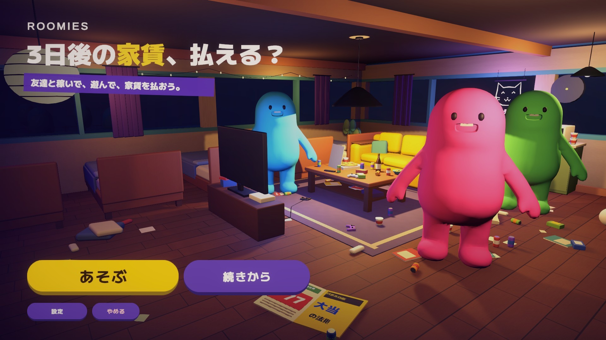
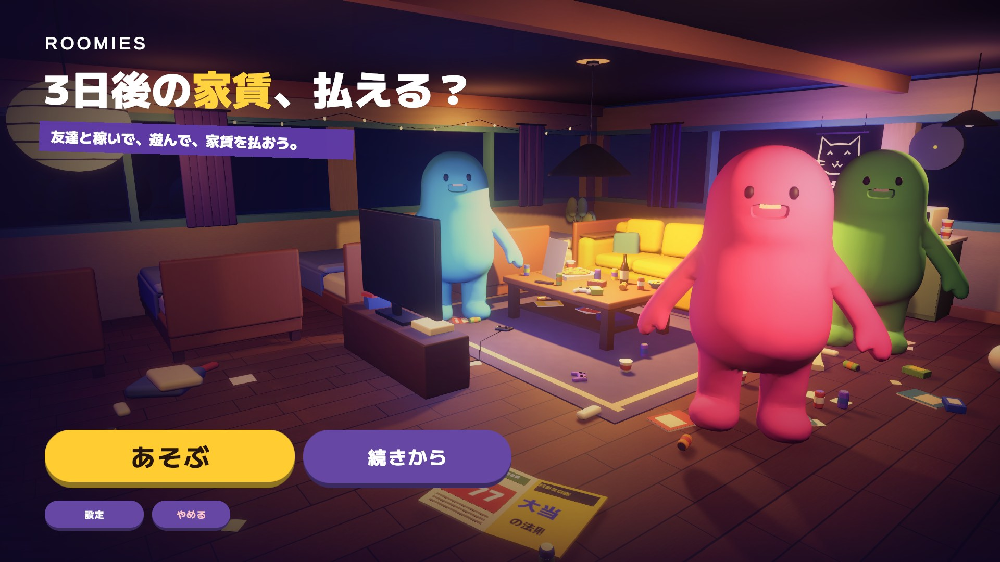
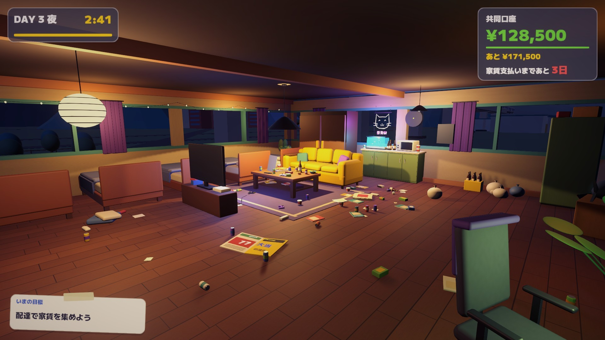
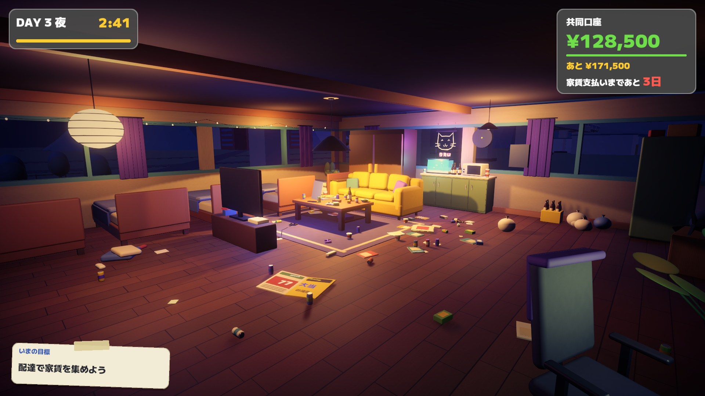
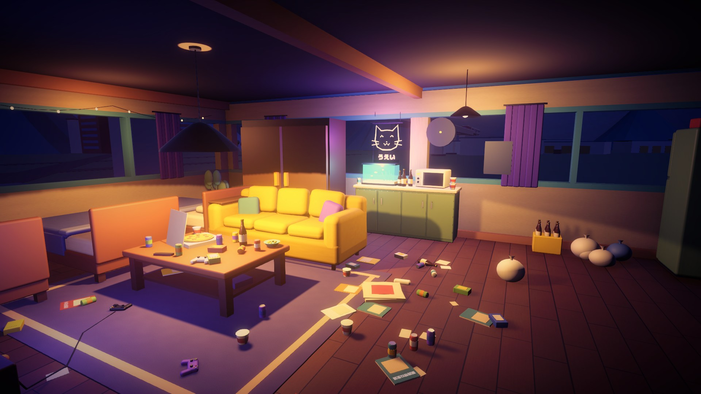
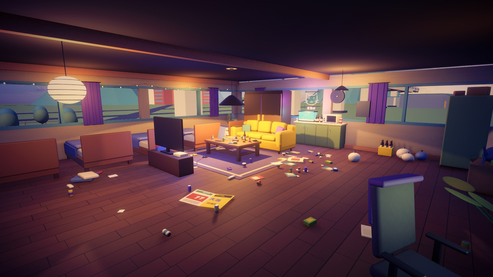

Roomies 画面の仕上げ（ポストエフェクト）
左が前、右が後。同じカメラ位置で撮っています。HUD・メニューは仕上げをかけずに重ねています（ゲームと同じ）。
参考

01 タイトル


03 ゲーム中（夜・HUD付き）


04 リビング（夜）


05 部屋（朝）


変えたところ
- トーンマッピング Neutral、露出 +0.5、コントラスト 14、彩度 −2、色フィルター 少し暖色
- Bloom しきい値 0.8、強さ 1.25、広がり 0.8、色 暖色
- ハイライトは暖色・シャドウは青紫（スプリットトーン、シャドウ・中間・ハイライト）
- ビネット 0.42（濃い紫）
- AO（SSAO）強さ 0.4 → 0.8、半径 0.3 → 0.45